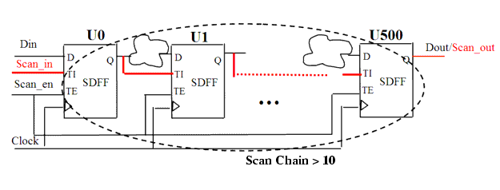

| Description | To reduce manufacturing test time, it is a good idea to use a scan chain that is as short as possible. You can set the maximum acceptable number of flip-flops in the Tcl shell using the rule_set_parameter command and the NB_MX_FFS parameter. The default is 10. For example:
leda> rule_set_parameter -rule NTL_DFT10 \
-parameter NB_MX_FFS -value {50}
|
| Policy | DESIGN |
| Ruleset | DFT |
| Language | VHDL/Verilog |
| Type | Hardware |
| Severity | Error |
This is an example of invalid Verilog code, followed by a circuit diagram that illustrates the problem:
module ntl_dft10_top(Clock, Scan_en, Scan_in, Din, Dout ); input Clock, Scan_en, Scan_in, Din; output Dout; reg D_1, D_2, D_3, D_4, ...... , D_500; // Scan DFF SDFF U0 (.D(Din), .CP(Clock), .TI(Scan_in), .TE(Scan_en), .Q(D_1)); SDFF U1 (.D(D_1), .CP(Clock), .TI(D_1), .TE(Scan_en), .Q(D_2)); SDFF U2 (.D(D_2), .CP(Clock), .TI(D_2), .TE(Scan_en), .Q(D_3)); SDFF U3 (.D(D_3), .CP(Clock), .TI(D_3), .TE(Scan_en), .Q(D_4)); SDFF U4 (.D(D_4), .CP(Clock), .TI(D_4), .TE(Scan_en), .Q(D_5)); ... SDFF U500 (.D(D_500), .CP(Clock), .TI(D_500), .TE(Scan_en), .Q(Dout)); // NTL_DFT10 fires -- scan chain too long (> 10) endmodule